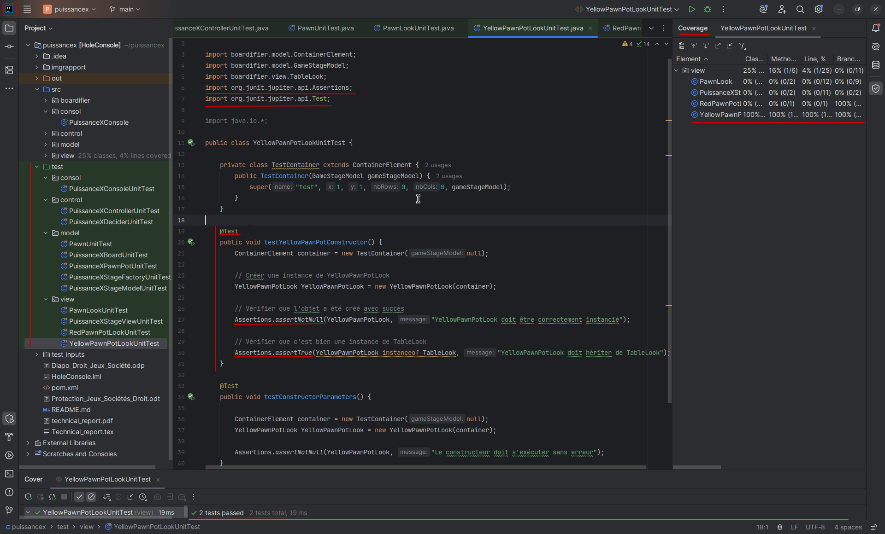
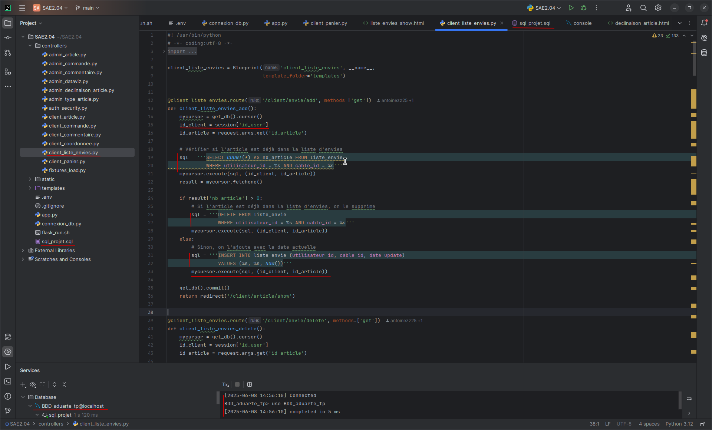

Actuellement étudiant en première année de BUT Informatique à l'IUT de Belfort-Montbéliard, je suis passionné par le développement logiciel et les nouvelles technologies.
Ce portfolio présente une sélection de mes réalisations qui démontrent mes compétences techniques et ma progression dans différents domaines de l'informatique.
Mes Traces

Trace 1 : Test unitaire
Cliquez pour plus de détails

Trace 2 : Python, Flask et SQL
Cliquez pour plus de détails
×
Figure 1 : Capture d'écran des tests unitaires d'un projet Puissance 4 sous IntelliJ IDEA
Figure 1 : Tests Unitaires - Projet Puissance 4
Cette figure 1 est une capture d'écran du projet que j'ai réalisé en groupe dans le cadre de la SAE, consistant à développer un jeu de type Puissance 4 basé sur le framework Boardifier. La capture présente un fichier de test nommé YellowPawnPotLookUnitTest.java, écrit et dévellopé grace l'IDE IntelliJ Idea. Ce fichier fait partie de l'architecture du projet et contient des tests unitaires visant à vérifier le bon fonctionnement d'une des classes de la vue graphique du jeu.
Les tests unitaires sont une pratique de développement logiciel permettant de vérifier, de manière automatisée, qu'une méthode ou un composant fonctionne comme prévu. Concrètement, il s'agit d'écrire du code qui appelle une méthode avec des paramètres donnés, puis de comparer le résultat obtenu avec celui attendu (appelé oracle). Cela permet notamment de s'assurer qu'une modification future ne casse pas le comportement d'une fonction existante. Cette capacité à prévenir les régressions est essentielle dans tout projet logiciel un tant soit peu complexe.
Dans notre cas, les tests écrits permettent de garantir que certains objets graphiques du jeu sont bien initialisés et se comportent comme attendu lorsqu'ils sont instanciés.
Ce test est relativement simple, mais il illustre que je maîtrise les bases de l'écriture de tests unitaires avec JUnit, en particulier l'utilisation des assertions comme assertNotNull() ou assertTrue() pour vérifier que les objets ont été correctement instanciés. Je montre également que je sais structurer un test dans une classe dédiée, suivre les conventions de nommage, et utiliser une classe interne simulant un environnement de test (ici TestContainer), preuve que je comprends comment isoler une unité de code à tester.
Je n'utilise pas encore Mockito dans ce fichier, mais je connais le principe : il permettrait de simuler des objets complexes, ce qui est utile pour tester des comportements dépendant de composants externes, comme le modèle du jeu ou l'état de la partie.
En bas à droite de la capture, on voit l'outil d'analyse de couverture de tests intégré à l'IDE. Il indique que 100 % du code de la classe YellowPawnPotLook est couvert par les tests, ce qui montre que les tests sont bien exécutés et pertinents. Globalement, notre projet atteignait environ 80 % de couverture totale du code, ce qui est un résultat satisfaisant pour un projet étudiant, même si certaines méthodes liées à l'affichage ne peuvent pas être testées facilement via JUnit.
Même si les tests fonctionnent correctement et que certaines classes sont entièrement couvertes, la qualité globale de la suite de tests pourrait être améliorée. Par exemple, beaucoup de méthodes ne sont testées que dans des cas simples, et certains comportements spécifiques (comme des cas limites ou des erreurs) ne sont pas encore couverts. Mon savoir-faire actuel reste encore basique sur certains aspects (tests d'interactions complexes, mocks avancés), mais cette SAE m'a permis de bien intégrer les principes fondamentaux du test unitaire et de les appliquer dans un cadre concret. La suite logique serait d'approfondir l'usage de bibliothèques comme Mockito, et de m'exercer à écrire des tests plus robustes et complets.
×
Figure 2 : Code source Python illustrant l'utilisation de Flask et SQL dans le projet Cablissimo
Figure 2 : Python, Flask et SQL
Cette figure 2 montre un extrait du projet Cablissimo, une application e-commerce développée en groupe dans le cadre d'une SAE. Ce site permet à des utilisateurs de consulter et acheter des câbles via une interface web développée avec Flask (Python) et une base de données SQL. La capture présente une partie du code backend qui gère la liste d'envies des clients.
La route /client/envie/add permet à un utilisateur connecté d'ajouter un article à sa liste. Le code commence par vérifier si l'article est déjà présent, grâce à une requête SELECT COUNT(*). Si c'est le cas, il est supprimé de la base via une requête DELETE. Sinon, l'article est ajouté avec la date courante grâce à une requête INSERT. Ce fonctionnement rend l'action idempotente : un second clic inverse le premier, ce qui simplifie l'expérience utilisateur.
Le script montre que je sais utiliser Flask pour créer des routes, gérer une session utilisateur avec session['id_user'], et exécuter des requêtes SQL paramétrées de manière sécurisée. La connexion à la base se fait via un curseur Python, démontrant que je maîtrise l'interaction entre un serveur Flask et une base de données. Cette trace prouve que je sais me connecter à une base de données SQL depuis une application Python et que je maîtrise l'environnement de développement PyCharm pour concevoir, tester et organiser mon code.
Cette fonctionnalité combine plusieurs compétences clés : conception de la logique métier, gestion conditionnelle, organisation modulaire, sécurité des requêtes, et structuration claire du code serveur. Elle représente un exemple concret d'intégration full-stack entre frontend et backend.
Enfin, cette trace met en lumière des pistes d'amélioration possibles : unifier les routes d'ajout et de suppression en une seule avec un paramètre d'action, optimiser les requêtes SQL avec INSERT ... ON DUPLICATE KEY UPDATE si le SGBD le permet, et intégrer des tests automatisés avec pytest-flask pour assurer la robustesse du code. Ce travail m'a permis de mettre en œuvre des compétences essentielles du développement web moderne dans un contexte collaboratif.